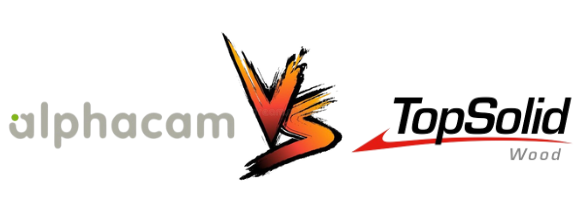
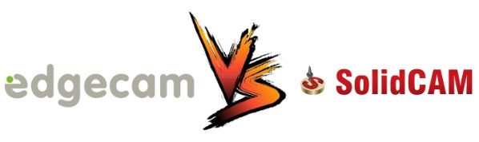

Pontos Fracos

Pontos Fortes
TROCAS DE BASE
Logo abaixo, temos exemplos de empresas que possuiam um software da concorrência,
porém por algum motivo passaram a utilizar o edgecam da SKA

Pontos Fracos
- Software "engessado"
- Desbaste e acabamento 3 eixos com recursos limitados
- Suporte técnico local com poucas pessoas
- Poucas refências em ferramentas
Pontos Fortes
- Desde a usinagem simples as mais complexas;
- Oferece solução para o CAD e CAM.
TROCAS DE BASE
Logo abaixo, temos exemplos de empresas que possuiam um software da concorrência,
porém por algum motivo passaram a utilizar o edgecam da SKA


Pontos Fracos
Pontos Fortes
- São muito inteligentes
- Usinagem simples e complexas
TROCAS DE BASE
Logo abaixo, temos exemplos de empresas que possuiam um software da concorrência,
porém por algum motivo passaram a utilizar o edgecam da SKA
